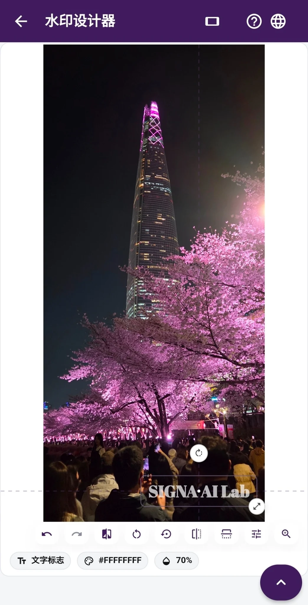

01 · 水印 · 免费加水印，不限使用次数
一次给最多 12 张照片加水印
用内置字体写名字，也可以导入自己的标志。用姓名或首字母做个标志，把纸上的手写字拍成水印，或者直接在屏幕上签名。字体、颜色和透明度都能调，水印的大小和位置也能按照片单独设置。常用样式存起来，下次接着用。打开相应选项，还能同时加上不可见的 SIGNA 信号。
每张照片都有推荐位置。 SIGNA 会建议水印放在哪里，帮你更快开始调整。不合适也没关系：可以自己移动，或撤销推荐、恢复原来的位置。
横图竖图都能编辑 · 一次最多 12 张 · 每张单独定位 · 保存设计 · Pro 额外字体
 查看完整应用界面 ↗
查看完整应用界面 ↗
